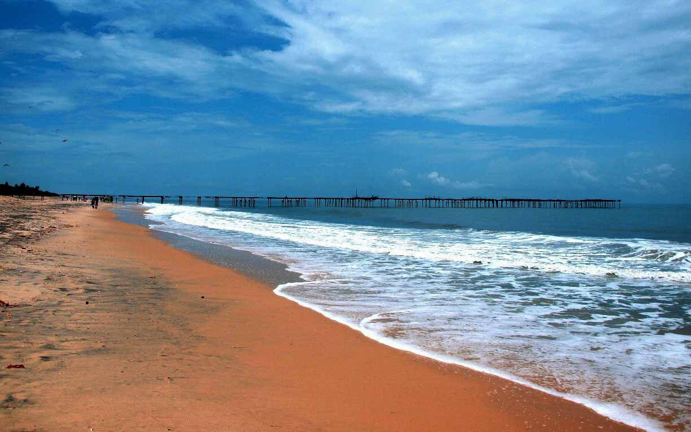
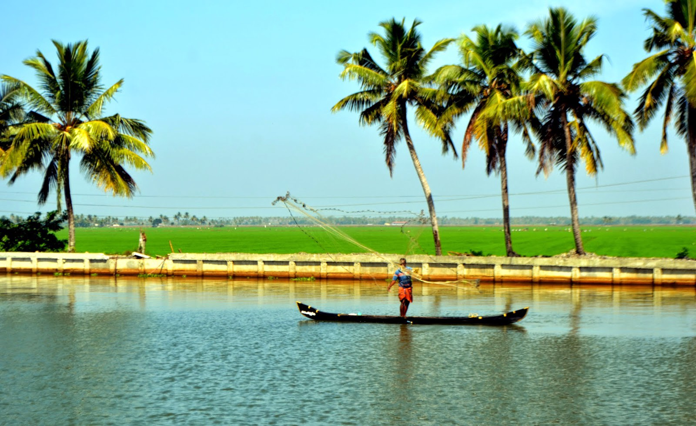

Alappuzha Beach

Alappuzha Backwaters

Referred to as the 'Venice of the East' by travellers from across the world, Alappuzha Is a district of immense natural beauty. Caressed by the Arabian Sea in the west and a vast network of lakes, lagoons and freshwater rivers criss-crossIng it, this backwater country shelters some unique animal and bird life. By virtue of its proximity to the sea, the town has always enjoyed an exclusive place in the maritime history of Kerala. Famous for its boat races, beaches, marine products and coir Industry,and the region called Kuttanad- a land of lush paddy fields referred to as the 'Rice Bowl of Kerala' and one of the few pieces in the world where farming is done below sea level, this onetime prosperous agriculture and fishing centre is today a world renowned backwater tourist destination.